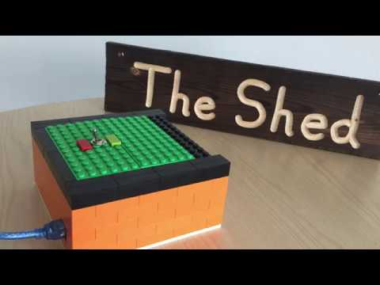

BUILDSUseless Box – Final Result2018-08-31 · Updated 2018-10-04 Here it is – The final result! Powered using an Arduino Uno, two ‘reclaimed’ servos, and a handful of Lego blocks. Great fun to make, a good starting project for people interested in Arduinos, and a lot of fun to use!